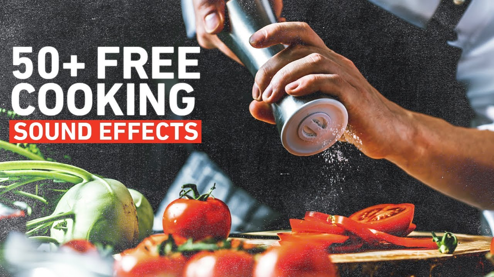
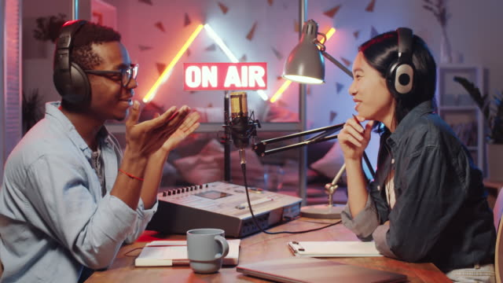

Videos App
Receitas Deliciosas
As melhores receitas para fazer em casa

Receitas práticas para todas as refeições
Podcasts
Os podcasts mais relevantes da internet

Os melhores cortes de podcast
Os melhores vídeos da internet
Para todas as idades
Videos mais engraçados, tente não rir #1 Nivel Hard